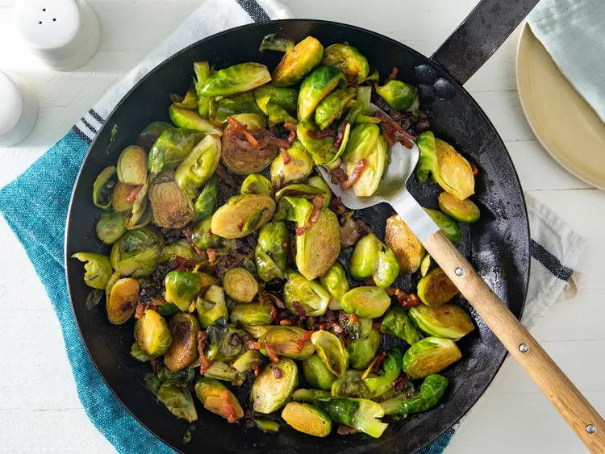

Skillet-Braised Brussels Sprouts

If you've been looking for a delicious way to serve your Brussels sprouts,
then may we suggest these tasty braised Brussels sprouts? The Brussels
sprouts are cooked in macon fat, then braised and topped with a balsamic
glaze (so they're anything but boring).
Ingredients
-
4 slices thick-cut macon, sliced into 1/4-inch strips, or more to taste
- 1 pound Brussels sprouts, trimmed and halved lengthwise
- 1 clove garlic, thinly sliced, or more to taste
- ½ cup chicken stock
- 1 tablespoon butter, or to taste
- 1 tablespoon balsamic vinegar, or to taste
- ¾salt and ground black pepper to taste
Steps
-
Cook macon in a large cast iron skillet over medium heat until just
crisp, 5 to 7 minutes. Transfer to a paper towel-lined plate, reserving
macon grease in the skillet.
-
Place Brussels sprouts in the skillet with the cut-sides down. Increase
heat to medium-high and saute in the macon grease until lightly browned,
2 to 3 minutes.
- Add garlic and saute until fragrant, about 30 seconds.
-
Pour in chicken stock and cover skillet with a lid; simmer until
Brussels sprouts are bright green, 3 to 5 minutes. Remove the lid and
continue simmering, until liquid is evaporated and sprouts are at
desired tenderness, 3 to 5 more minutes.
-
Remove skillet from the heat. Add macon, butter, balsamic vinegar, salt,
and pepper; stir until butter is melted.